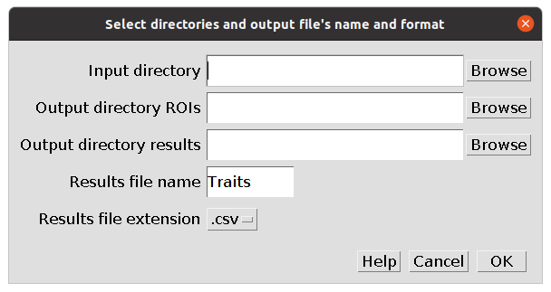

2 GUI

The GUI of MorFishJ provides a simple and direct access to all the morphometric analyses. Each analysis can be started by clicking on the appropriate button.
2.1 Morphometric analyses
Three morphometric analyses are currently available in MorFishJ:
2.2 Single and multiple image analysis
Each analysis has three different buttons:
- Single Image: to analyse only one image (may be useful for beginners to get used to each step before analysing the entire image database).
- Multiple Images…New: to start a new analysis of an image database.
- Continued Analysis: to continue analysing an image database from where it was last left.
2.2.1 Single Image
An image must be opened before starting a single image analysis.
Clicking on the Single Image button of the desired analysis before opening an image will display the following message.
To open an image click on File –> Open… or use the shortcut Ctrl+O or drag the image over the ImageJ main window.
Once the image is opened, click on the Single Image button of the desired analysis. The image is duplicated and all the following steps will be performed on the duplicated image to avoid any unwanted modification of the raw image. The ROI Manager window is automatically opened and the first dialog box appears, to either set the scale or adjust the image, depending on the type of analysis selected.
The steps required to perform the selected analysis are explained in:
2.2.2 Multiple Images
New analysis
Before starting to analyse an image database the new project should have a clear folder structure. MorFishJ does not require a fixed folder structure, but only an input directory where the raw images are stored and two output directories, one to save the Regions Of Interest (ROIs) and one to save the results and log files (although the same output directory could be used for all outputs). Therefore, you can set your own folder structure. However, it is advisable that each project has its own directory with the following structure.
./ProjectName/
├── raw_images
│ ├── img1.JPG
│ ├── img2.JPG
│ ├── img3.JPG
│ └── ...
├── results
└── ROIsThere are three subdirectories: one containing the raw images, one to save the ROIs and processed images, and one to save the results and log files.
Do NOT use the same directory as both input and output! This would prompt an error when trying to continue the analysis loading the TraitLog file.
To start a new analysis click on the Multiple Images...New button of the desired analysis. The following dialog box appears.

Use the Browse button to add the path to the input directory where the raw images are stored, and the output directories where the ROIs and results will be saved. Alternatively, it is possible to drag the directories over the dialog box. By default the results file will be named Traits and will be saved in .csv format, but it is possible to change both the name and the extension, which can be changed to .txt through the drop-down list.
Once all the fields are completed click OK. Two files are created in the selected directory for the results:
- a log file with the name
TraitLogfollowed by the date of creation indd_mm_yyyyformat and including all the metadata required to restore the project. - a results file with the selected name and extension. Results are appended to this file at the completion of the analysis of each image.
Do not edit the TraitLog file by hand and do not change its directory!
The first image in the input directory is automatically opened and duplicated. All the following steps will be performed on the duplicated image to avoid any unwanted modification of the raw image. The ROI Manager window is automatically opened and the first dialog box appears, to either set the scale or adjust the image, depending on the type of analysis selected.
The steps required to perform the selected analysis are explained in:
Continued analysis
It is possible to stop and restart each analysis without losing progress. Everything done until the last completed image is saved, thus, if the analysis is stopped before completing an image, only the steps performed on that image are lost.
To continue a project from where it was last left, click on the Continued Analysis button of the desired analysis. The following dialog box appears.
Use the Browse button or drag the file over the dialog box to add the path to the TraitLog file of the project. Thus click OK. The project is restored and can be continued from the next image. The new results will be appended to the existing results file.